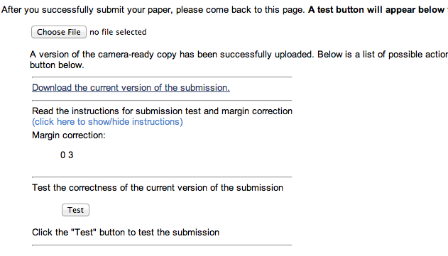

NAACL 2013 Publication Instructions - Main Conference
When and where do I send my final camera-ready paper?
The deadline is April 7, 2013. You may submit the final version of your paper
by navigating to the NAACL 2013 START
login and following the internal links. You should have received an email with more
information about this procedure.
What's new for 2013?
How should the final copy differ from the original submission?
The camera-ready version of your paper should incorporate the comments of the reviewers as well
as other changes you see fit to make. In addition, be sure to do all of the following:
- Include the authors' names and affiliations under the title.
- De-anonymize references to your own work in the body of the paper.
- Where appropriate, add acknowledgments for colleagues, reviewers, and grants.
- Ensure that all tables, graphs, and figures are readable when viewed in black &
white.
How long can it be?
For both long and short papers, we allow one extra page to help address reviewer comments.
Long papers are permitted at most 9 pages of text plus 2 additional pages containing only references.
Short papers get 5 pages of text plus up to 2 pages for references
What is the format for the camera-ready copy?
The file must be in Portable Document Format (PDF) on US Letter paper (8.5 x 11 inches).
We strongly recommend the use of ACL LaTeX style files or Microsoft Word Style files tailored for this
year's conference. You can view the style files and detailed formatting instructions on the web in
their Github repository,
or download the tarball
directly (134K).
If you are using LaTeX, please create the PDF file with
pdflatex or xelatex. This ensures use of the proper Type 1 fonts and
also takes advantage of other PDF features. You will have the best results using a modern LaTeX
distribution, in particular, TeX live (TeX Live 2012 is
available).
How do I ensure that my file is correctly formatted?
Checking the paper size. Your paper needs to be formatted to US Letter-sized (8.5 inches
wide and 11 inches tall). Here are a couple of ways to check this:
Adjusting margin offsets. Depending on how your produced your paper, the text may be
shifted slightly relative to other papers. When the book is assembled, the boundary around the
printed portion of your paper may need to be shifted so that each paper is in the same position on
each page. When you upload your camera-ready paper in Softconf, you will be presented with a small
form that presents you with guides and allows you to adjust these offsets:

If your paper uses Asian fonts, please ensure that they are embedded in the PDF file so
that they can be displayed by non-Asian versions of the PDF reader. (Asian versions ship with a
larger set of default fonts.)
What if my paper includes graphics?
Remember that you are providing a camera-ready copy. Thus, artwork and photos should be included
directly in the paper in their final positions. Ideally, you should use vector graphic formats
(PDF, EPS), which allow the graphics to scale arbitrarily. Avoid GIF or JPEG images that are low
resolution or highly compressed.
Your paper must look good both when printed (8.5" x 11" size, black-and-white) and when viewed
onscreen as PDF (zoomable to any size, color okay). Thus, you may want to use color high-resolution
graphics, allowing onscreen readers to zoom in on a graph and study it. However, please
check that the same graph or photograph is legible when printed on a black-and-white printer. For
example, different lines in a graph should not be distinguished only by color, although they
can also be distinguished by color.
A good test is to print the paper on your own black-and-white laser printer, and to view it in a
PDF viewer at different resolutions.
Don't go overboard on resolution; keep file sizes manageable. Note that vector graphics (e.g.,
encapsulated PostScript) look good at any scale and take up little space (unless you are plotting
many thousands of data points).
What about copyright?
When you submit the paper, you will be asked to sign electronically (via the START Conference Manager)
or physically the ACL Copyright Transfer Agreement on
behalf of all authors. Authors retain many rights under this agreement and it is
appropriate in the vast majority of cases.
Please contact the publications chairs with
any concerns regarding copyright.
Before signing this form, please confirm with your co-authors (and, if applicable, your and their
employers) that they authorize you to sign on their behalf.
What if my paper's title or author list has changed?
Then please edit those metadata fields when you upload the camera-ready version, so that they
will appear correctly in the table of contents, author index, conference schedule, etc.
Please also note that your name will appear in conference metadata as you have
configured it in Softconf's system, so make sure that it is correct there (e.g., capitalization,
full name, etc). You can change this
on user
settings page.
My question isn't answered here ...?
Please email the publications chairs (Colin Cherry and Matt Post)
at naacl-2013-pub-chairs@googlegroups.com.
We will update this page as new issues arise.
Last updated on 2013-02-22 15:43 Friday.